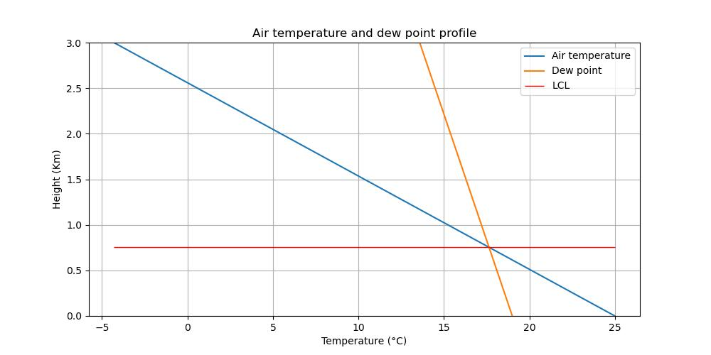

The Lifting Condensation Level
We divide this tutorial into a theoretical part and an implementation part
The theory
We consider a parcel of moist air, that is a parcel of air that contains water vapor. The lifting condensation level (LCL) is the height (or pressure) to which an air parcel must be lifted through a dry adiabatic process so that its relative humidity reaches 100% and the condensation process can start. The LCL is at the clouds base. The process can be considered adiabatic because the vapor molecules within the parcel are assumed to follow a diffusion process while rising vertically and diffusion is a very slow process compared to the speed of a convective vertical movement. In other words, the LCL is where the air parcel temperature equals its dew point. The height of the LCL for an air parcel depends on the temperature and on the humidity. For an air parcel lifted through a dry adiabatic process, before the condensaton starts its temperature is
where \(T_0\) is the temperature at \(z_0\) and \(\Gamma = \frac{g}{C_p} = 9.75 K/Km\) is the dry adiabatic lapse rate. An air parcel of saturated air, that is with 100% relative humidity, follow a different process and its temperaure decreases at a smaller rate with height because of the condensation that releases heat. For the dew point \(T_d\) of the air parcel we have
where
is the dew point lapse rate for an unsaturated air parcel. By definition at the lifting condensation level \(z_{LCL}\) is where \(T=T_d\). With this definition, after some algebraic manipulation, we have
The implementation
In this section we comment the relevant code blocks for the calculation of the LCL. The full code is in the example folder of the project repository. In order to calculate the lifting condensation level we import some packages for the calculations with physical units and for some physical constants and the dew point lapse rate that we will use to draw the temperature profile and the dew point profile of an air parcel starting from their values at the ground level
import numpy as np
import matplotlib.pyplot as plt
from slmeteo.units import u_reg, Q_
from slmeteo.constants import const
import slmeteo.thermodynamics as calc
The nex step is to set the air parcel temperature and dew point at ground level in °C and then to transform these values in Kelvin
t_0 = Q_(25.0, u_reg.degC)
T_0 = t_0.to('kelvin')
t_dew0 = Q_(19.0, u_reg.degC)
T_dew0 = t_dew0.to('kelvin')
We need the dry air lapse rate and the dew point lapse rate to calculate the lifting condensation level. The dry air lapse rate is a constant and dew point lapse rate can be calculated using a function
Gamma_dew = calc.dew_point_lapse_rate(T_0, T_dew0)
Now we have all we need to calculate the lifting condensation level \(z_{LCL}\)
z_0 = 0.0 * u_reg.meter
z_lcl = z_0 + (T_0 - T_dew0) / (const.Gamma_d - Gamma_dew)
We can plot the temperature and the dew point profiles to see the difference in the rate of change for a rising air parsel

The temperature rate of change of an unsaturated air parcel following a dry adiabatic process is more than 5 times bigger than the rate of change of a satured air parcel so, depending on the difference at the ground level between these two values, the LCL can be more or less close to the surface. A real air parcel doesn’t stricty follow a dry adiabatic process. The US standard atmosphere set the temperature lapse rate in the troposphere for an air parcel at 6.5°C/km so that the LCL would be at a quite higher height. These values are used to determine the stability of the atmosphere that is determined comparing the air parcel temperature with the atmosphere temperature profile from a radiosonde discussed in the Thermodiagrams tutorials.